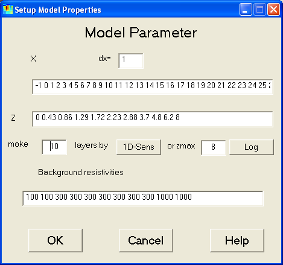

| Start Page | Menu Items | Interactive Features | Hotkeys | Tutorial |
|
This dialog is used to control the model parameterizations. By typing dx a new (equidistant) x-grid is defined, which also can be
edited manually. |
 |
This resets all model cells (and background resistivities) back to the homogeneous half-space of the median resistivity.
Hotkey: Shift+H
For further work or manual plots the model can be exported into an column-oriented model file (*.mod) of the following format:
x_1 x_2 z_1 z_2 resistivity (coverage)
...
The model files can be used for postprocessing as well as for saving purposes. It is recommended to save important inversion models as model file. Thus it is possible to print the model at a later time.